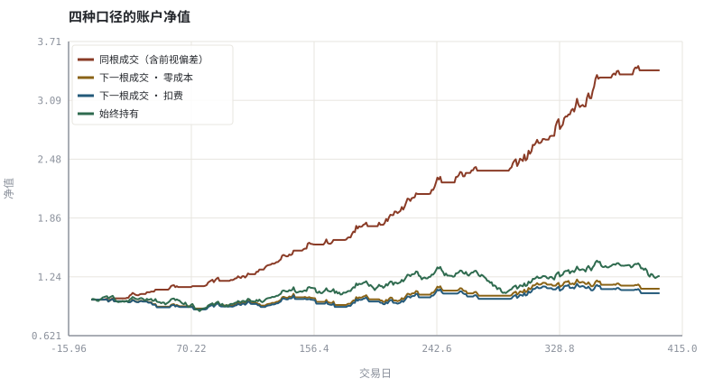
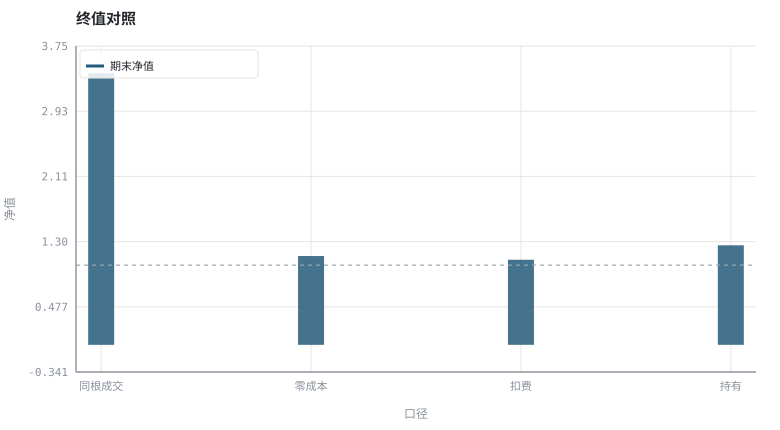

第 26 章事件驱动回测引擎：从信号到成交
回测不是向量化的乘法，而是一条有状态、有时序、有成本的事件链。
本章位置：第 25 章保证输入数据可信，本章保证执行时序可信；第 27 章 · 绩效度量与归因：夏普、回撤与 Brinson 用同一条净值曲线计算绩效，第 28 章 · 过拟合、多重检验与滚动样本外 检验参数是否过拟合。
回测引擎是一个状态机：bar 是事件，order 是待处理队列，fill 是下一个事件。把信号与成交放在同一个 tick，等于让请求先于响应返回。
- 能写出事件驱动回测的主循环与账户状态。
- 能说明 t 时刻信号必须在 t+1 成交。
- 能把手续费、滑点与资金约束写进每次成交。
- 能量化「同根成交」假设带来的虚假收益。
§知识点地图
每个知识点都配了 1～2 个扩展学习链接；本章完整资源清单见 扩展学习。
| # | 知识点 | 扩展学习 | 状态 |
|---|---|---|---|
| 1 | 事件循环与账户状态 | Backtesting · Look-ahead bias | 正文已覆盖 |
| 2 | 信号—下单—成交时序 | Volume (finance) · OHLC chart | 正文已覆盖 |
| 3 | 同根成交的错误 | Volume (finance) · OHLC chart | 正文已覆盖 |
| 4 | 手续费与滑点 | Slippage (finance) · Market microstructure | 正文已覆盖 |
| 5 | 仓位与资金约束 | Backtesting · Look-ahead bias | 正文已覆盖 |
| 6 | 订单状态机 | Backtesting · Look-ahead bias | 正文已覆盖 |
| 7 | 基准与对照 | Backtesting · Look-ahead bias | 正文已覆盖 |
| 8 | 回测的可复现性 | Backtesting · Walk forward optimization | 正文已覆盖 |
§26.1最小可用引擎的五个状态
一个事件驱动引擎至少要维护：cash、position、pending_orders、last_signal、equity。每根 K 线依次执行：接收行情 → 更新持仓市值 → 计算信号 → 生成订单 → 按下一根可成交价格撮合 → 计费与交割 → 记录快照。
信号在 t 收盘后产生，最早只能在 t+1 成交。任何 equity[t] *= (1 + signal[t] * ret[t]) 都在用还没发生的收盘价下已经知道的信号。
§26.2成本必须发生在成交那一刻
净收益 = Σ (exposure_t × r_(t+1)) − Σ (fee_t + slippage_t + 借券费_t)
把成本写成「年底统一减 1%」会掩盖高换手策略的真实衰减：成本与信号频率、成交量、波动同时相关，必须逐笔计提。第 29 章会把滑点从常数升级为订单规模的函数。
§26.3对照实验比漂亮净值更重要
| 对照组 | 目的 |
|---|---|
| 始终持有 | 检验择时是否真的加了价值 |
| 同根成交（错误版） | 量化前视偏差有多大 |
| 零成本版 | 分离信号质量与成本拖累 |
| 随机信号 | 给出一个不依赖策略的基线分布 |
§Python 分析实例
实验 26-1 · 事件驱动主循环与「同根成交」泄漏
#!/usr/bin/env python3
# -*- coding: utf-8 -*-
"""实现信号→下一根成交→计费的状态链，并与错误版、零成本版、持有基准对照。
数据为合成数据或模型示意，仅用于教学，不构成投资建议。
"""
from __future__ import annotations
import math
import pathlib
import random
import statistics
import sys
sys.path.insert(0, str(pathlib.Path(__file__).resolve().parents[3] / "tools"))
from chart import Chart, candlestick, heatmap, BLUE, RED, GREEN, AMBER
FIG = pathlib.Path(__file__).resolve().parents[1] / "fig"
FIG.mkdir(exist_ok=True)
random.seed(7)
# ---- 参数区 ----
N, W = 400, 10
START, DRIFT, VOL = 50.0, 0.0004, 0.014
FEE = 0.0005 # 换仓费率
SLIP = 0.0003 # 换仓滑点
# ---- 计算与作图 ----
rng = random.Random(7)
px, prices = START, []
for _ in range(N):
px *= (1 + rng.gauss(DRIFT, VOL))
prices.append(px)
rets = [prices[t] / prices[t - 1] - 1 for t in range(1, N)]
sig = [0] * N
for t in range(W, N):
sig[t] = 1 if prices[t] > statistics.fmean(prices[t + 1 - W:t + 1]) else 0
def run(mode, with_cost=True):
v, eq_curve, prev, trades, cost = 1.0, [1.0], 0, 0, 0.0
for t in range(1, N):
exposure = sig[t] if mode == "same_bar" else sig[t - 1]
r = rets[t - 1]
if exposure != prev:
trades += 1
if with_cost:
slip = SLIP
v *= (1 - FEE)
cost += FEE + slip
else:
slip = 0.0
else:
slip = 0.0
v *= (1 + exposure * (r - slip))
prev = exposure
eq_curve.append(v)
return eq_curve, trades, cost
naive, naive_trades, _ = run("same_bar", False)
legal_nc, trades, _ = run("next_bar", False)
legal, _t2, total_cost = run("next_bar", True)
hold, v = [1.0], 1.0
for r in rets:
v *= (1 + r)
hold.append(v)
c = Chart(FIG / "26-backtest.svg", "四种口径的账户净值", xlabel="交易日", ylabel="净值")
c.line(range(N), naive, RED, label="同根成交（含前视偏差）")
c.line(range(N), legal_nc, AMBER, label="下一根成交 · 零成本")
c.line(range(N), legal, BLUE, label="下一根成交 · 扣费")
c.line(range(N), hold, GREEN, label="始终持有")
print("净值图:", c.save())
b = Chart(FIG / "26-cost.svg", "终值对照", xlabel="口径", ylabel="净值",
xticks=[(i, n) for i, n in enumerate(["同根成交", "零成本", "扣费", "持有"])])
b.bars(range(4), [naive[-1], legal_nc[-1], legal[-1], hold[-1]], BLUE, label="期末净值")
b.hline(1.0, "#9aa6b2")
print("对照图:", b.save())
print("同根成交=%.3f 零成本=%.3f 扣费=%.3f 持有=%.3f | 换仓 %d 次 累计成本=%.4f | 泄漏=%.3f" %
(naive[-1], legal_nc[-1], legal[-1], hold[-1], trades, total_cost,
naive[-1] - legal_nc[-1]))操作：对照 泄漏 数值；把 FEE 与 SLIP 同时设为 0，两条合法曲线应重合。 预期与判读：同根成交版把「收盘后才知道的信号」用于同一根收益，净值被系统性抬高；下一根成交 + 逐笔计费才是可执行的口径。差额就是泄漏量。
改参数看趋势：把 W 改成 3，换仓次数增加，观察成本项如何放大。 文件位置：part5/26-backtest/code/26-backtest.py


代码块右上角可一键复制；仓库里的 code/*.py 由 tools/extract_code.py 从这些代码块自动抽取。脚本只用标准库、固定 random.seed(7)，运行后写出 fig/*.svg；批量运行用 ./tools/run_python.sh。
§本章参考资料
按本章知识点挑选的精读资料；更多检索入口见 扩展学习。
Slippage (finance)
百科 · 参考资料下单价格与实际成交价的差
怎么用：成交价与预期价的差额https://en.wikipedia.org/wiki/Slippage_(finance)
§常见误区
- 信号与成交同根，制造前视偏差。
- 成本年底一次性扣除，忽略换手与成交时点的耦合。
- 不检查资金是否足够、是否可做空、是否涨跌停不可成交。
- 只报一条净值曲线，不给基准与对照组。
§习题与思考
- 给示例加入「最多 80% 仓位」约束，说明引擎状态需要新增哪些字段。
- 在涨跌停日让订单无法成交，观察净值与换仓次数的变化。
- 写出随机信号对照组，重复 100 次得到终值分布，与策略结果比较。
§扩展学习
以下资料按本章知识点挑选，可直接精读或对照真实数据；知识点地图里每一条也挂了 1～2 个直达链接。
- Backtesting（百科）：用历史数据检验策略的流程与陷阱
Backtesting - Look-ahead bias（百科）：用到未来信息的隐形数据泄漏
Look-ahead bias - Slippage (finance)（百科）：下单价格与实际成交价的差
Slippage (finance) - Backtrader（工具）：事件驱动回测框架的参考实现
Backtrader - vectorbt（工具）：向量化回测与参数扫描框架
vectorbt
继续扩展：在 Google Scholar 检索本章相关论文 · 在 MIT OCW 检索配套课程 · 在 arXiv 检索预印本 · 全书参考资源总表 · 附录 A 速查与链接总表